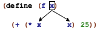
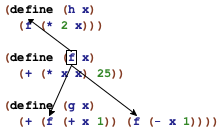
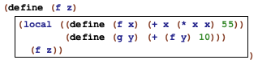
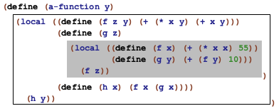

Intermezzo 3: Scope and Abstraction
While the preceding part gets away with explaining local and lambda in an informal manner, the introduction of such abstraction mechanisms really requires additional terminology to facilitate such discussions. In particular, these discussions need words to delineate regions within programs and to refer to specific uses of variables.
This intermezzo starts with a section that defines the new terminology: scope, binding variables, and bound variables. It immediately uses this new capability to introduce two abstraction mechanisms often found in programming languages: for loops and pattern matching. The former is an alternative to functions such as map, build-list, andmap, and the like; the latter abstracts over the conditional in the functions of the first three parts of the book. Both require not only the definition of functions but also the creation of entirely new language constructs, meaning they are not something programmers can usually design and add to their vocabulary.
Scope
At the same time, the first occurrence of x in f is different from the others. When we evaluate (f n), the occurrence of f completely disappears while those of x are replaced with n. To distinguish these two kinds of variable occurrences, we call the x in the function header a binding occurrence and those in the function’s body the bound occurrences. We also say that the binding occurrence of x binds all occurrences of x in the body of f. Indeed, people who study programming languages even have a name for the region where a binding occurrence works, namely, its lexical scope.
The definitions of f and g bind two more names: f and g. Their scope is called top-level scope because we think of scopes as nested (see below).
> f f
> g g
> x x:this variable is not defined


(define (p1 x y) (+ (* x y) (+ (* 2 x) (+ (* 2 y) 22)))) (define (p2 x) (+ (* 55 x) (+ x 11))) (define (p3 x) (+ (p1 x 0) (+ (p1 x 1) (p2 x))))





In general, if the same name occurs more than once in a function, the boxes that describe the corresponding scopes never overlap. In some cases the boxes are nested within each other, which gives rise to holes. Still, the picture is always that of a hierarchy of smaller and smaller nested boxes.
(define (insertion-sort alon) (local ((define (sort alon) (cond [(empty? alon) '()] [else (add (first alon) (sort (rest alon)))])) (define (add an alon) (cond [(empty? alon) (list an)] [else (cond [(> an (first alon)) (cons an alon)] [else (cons (first alon) (add an (rest alon)))])]))) (sort alon))) Figure 105: Drawing lexical scope contours for exercise 301
Exercise 301. Draw a box around the scope of each binding occurrence of sort and alon in figure 105. Then draw arrows from each occurrence of sort to the appropriate binding occurrence. Now repeat the exercise for the variant in figure 106. Do the two functions differ other than in name?
(define (sort alon) (local ((define (sort alon) (cond [(empty? alon) '()] [else (add (first alon) (sort (rest alon)))])) (define (add an alon) (cond [(empty? alon) (list an)] [else (cond [(> an (first alon)) (cons an alon)] [else (cons (first alon) (add an (rest alon)))])]))) (sort alon))) Figure 106: Drawing lexical scope contours for exercise 301 (version 2)

ISL for Loops
Even though it never mentions the word, Abstraction introduces loops. Abstractly, a loop traverses compound data, processingUse the 2htdp/abstraction library. Instructors who use it for the remainder of the book should explain how the principles of design apply to languages without for and match. one piece at a time. In the process, loops also synthesize data. For example, map traverses a list, applies a function to each item, and collects the results in a list. Similarly, build-list enumerates the sequence of predecessors of a natural number (from 0 to (- n 1)), maps each of these to some value, and also gathers the results in a list.
The loops of ISL+ differ from those in conventional languages in two ways. First, a conventional loop does not directly create new data; in contrast, abstractions such as map and build-list are all about computing new data from traversals. Second, conventional languages often provide only a fixed number of loops; an ISL+ programmer defines new loops as needed. Put differently, conventional languages view loops as syntactic constructs akin to local or cond, and their introduction requires a detailed explanation of their vocabulary, grammar, scope, and meaning.
Loops as syntactic constructs have two advantages over the functional loops
of the preceding part. On
the one hand, their shape tends to signal intentions more directly than a
composition of functions. On the other hand, language implementations
typically translate syntactic loops into faster commands for computers
than functional loops. It is therefore common that even functional
programming languages—
In this section, we introduce ISL+’s so-called for loops. The goal is to illustrate how to think about conventional loops as linguistic constructs and to indicate how programs built with abstractions may use loops instead. Figure 107 spells out the grammar of our selected for loops as an extension of BSL’s grammar from Intermezzo 1: Beginning Student Language. Every loop is an expression and, like all compound constructs, is marked with a keyword. The latter is followed by a parenthesized sequence of so-called comprehension clauses and a single expression. The clauses introduce so-called loop variables, and the expression at the end is the loop body.
expr = ... | (for/list (clause clause ...) expr) | (for*/list (clause clause ...) expr) | (for/and (clause clause ...) expr) | (for*/and (clause clause ...) expr) | (for/or (clause clause ...) expr) | (for*/or (clause clause ...) expr) | (for/sum (clause clause ...) expr) | (for*/sum (clause clause ...) expr) | (for/product (clause clause ...) expr) | (for*/product (clause clause ...) expr) | (for/string (clause clause ...) expr) | (for*/string (clause clause ...) expr) clause = [variable expr]


a list, its items make up the sequence values;
a natural number n, the sequence consists of 0, 1, ..., (- n 1); and
a string, its one-character strings are the sequence items.
Terminology Each evaluation of a loop body is called an iteration. Similarly, a loop is said to iterate over the values of its loop variables.
> (for/list ([i 10]) i) (list 0 1 2 3 4 5 6 7 8 9)
> (build-list 10 (lambda (i) i)) (list 0 1 2 3 4 5 6 7 8 9)
> (local ((define i-s (build-list 2 (lambda (i) i))) (define j-s '(a b))) (map list i-s j-s)) (list (list 0 'a) (list 1 'b))
Sample Problem Design enumerate. The function consumes a list and produces a list of the same items paired with their relative index.
; [List-of X] -> [List-of [List N X]] ; pairs each item in lx with its index (check-expect (enumerate '(a b c)) '((1 a) (2 b) (3 c))) (define (enumerate lx) (for/list ([x lx] [ith (length lx)]) (list (+ ith 1) x)))
> (define width 2)
> (for/list ([width 3][height width]) (list width height)) (list (list 0 0) (list 1 1))
> (for*/list ([width 3][height width]) (list width height)) (list (list 1 0) (list 2 0) (list 2 1))
Sample Problem Design cross. The function consumes two lists, l1 and l2, and produces pairs of all items from these lists.
; [List-of X] [List-of Y] -> [List-of [List X Y]] ; generates all pairs of items from l1 and l2 (check-satisfied (cross '(a b c) '(1 2)) (lambda (c) (= (length c) 6))) (define (cross l1 l2) (for*/list ([x1 l1][x2 l2]) (list x1 x2)))
; [List-of X] -> [List-of [List-of X]] ; creates a list of all rearrangements of the items in w (define (arrangements w) (cond [(empty? w) '(())] [else (for*/list ([item w] [arrangement-without-item (arrangements (remove item w))]) (cons item arrangement-without-item))])) ; [List-of X] -> Boolean (define (all-words-from-rat? w) (and (member? (explode "rat") w) (member? (explode "art") w) (member? (explode "tar") w))) (check-satisfied (arrangements '("r" "a" "t")) all-words-from-rat?) Figure 108: A compact definition of arrangements with for*/list
Note Figure 108 shows another in-context use of for*/list. It displays a compact solution of the extended design problem of creating all possible rearrangements of the letters in a given list.
While Word Games, the Heart of the Problem sketches the proper design of this complex program, figure 108 uses the combined power of for*/list and an unusual form of recursion to define the same We thank Mark Engelberg for suggesting this exhibition of expressive power. program as a single, five-line function definition. The figure merely exhibits the power of these abstractions; for the underlying design, see especially exercise 477. End
.../and collects the values of all iterations with and:
For pragmatics, the loop returns the last generated value or #false.- These loops return the first value that is not #false.
- .../sum adds up the numbers that the iterations generate:
> (for/sum ([c "abc"]) (string->int c)) 294
- .../product multiplies the numbers that the iterations generate
> (for/product ([c "abc"]) (+ (string->int c) 1)) 970200
> (define a (string->int "a")) > (for/string ([j 10]) (int->string (+ a j))) "abcdefghij"
Stop again! It is an instructive exercise to reformulate all of the above examples using the existing abstractions in ISL+. Doing so also indicates how to design functions with for loops instead of abstract functions. Hint Design and-map and or-map, which work like andmap and ormap, respectively, but which return the appropriate non-#false values.
; N -> sequence? ; constructs the infinite sequence of natural numbers, ; starting from n (define (in-naturals n) ...) ; N N N -> sequence? ; constructs the following finite sequence of natural numbers: ; start ; (+ start step) ; (+ start step step) ; ... ; until the number exceeds end (define (in-range start end step) ...)
Looping over numbers isn’t always a matter of enumerating 0 through (- n 1). Often programs need to step through nonsequential sequences of numbers; other times, an unlimited supply of numbers is needed. To accommodate this form of programming, Racket comes with functions that generate sequences, and figure 109 lists two that are provided in the abstraction library for ISL+.
(define (enumerate.v2 lx) (for/list ([item lx] [ith (in-naturals 1)]) (list ith item)))
; N -> Number ; adds the even numbers between 0 and n (exclusive) (check-expect (sum-evens 2) 0) (check-expect (sum-evens 4) 2) (define (sum-evens n) (for/sum ([i (in-range 0 n 2)]) i))
Exercise 305. Use loops to define convert-euro. See exercise 267.
Exercise 307. Define find-name. The function consumes a name and a list of names. It retrieves the first name on the latter that is equal to, or an extension of, the former.
Define a function that ensures that no name on some list of names exceeds some given width. Compare with exercise 271.
Pattern Matching
When we design a function for a data definition with six clauses, we use a six-pronged cond expression. When we formulate one of the cond clauses, we use a predicate toThe interested instructor may wish to study the facilities of the 2htdp/abstraction library to define algebraic data types. determine whether this clause should process the given value and, if so, selectors to deconstruct any compound values. The first three parts of this book explain this idea over and over again.
Repetition calls for abstraction. While Abstraction explains how programmers can create some of these abstractions, the predicate-selector pattern can be addressed only by a language designer. In particular, the designers of functional programming languages have recognized the need for abstracting these repetitive uses of predicates and selectors. These languages therefore provide pattern matching as a linguistic construct that combines and simplifies these cond clauses.
This section presents a simplification of Racket’s pattern matcher. Figure 110, which displays its grammar; match is clearly a syntactically complex construct. While its outline resembles that of cond, it features patterns instead of conditions, and they come with their own rules.
expr = ... | (match expr [pattern expr] ...) pattern = variable | literal-constant | (cons pattern pattern) | (structure-name pattern ...) | (? predicate-name)

(? predicate-name)
Semantically, a pattern is matched to a value v. If the pattern is
a literal-constant, it matches only that literal constant
> (match 4 ['four 1] ["four" 2] [#true 3] [4 "hello world"]) "hello world"
a variable, it matches any value, and it is associated with this value during the evaluation of the body of the corresponding match clause
(cons pattern1 pattern2), it matches only an instance of cons, assuming its first field matches pattern1 and its rest matches pattern2
(structure-name pattern1 ... patternn), it matches only a structure-name structure, assuming its field values match pattern1, ..., patternn
Obviously, matching an instance of posn with a pattern is just like matching a cons pattern. Note, though, how the pattern uses posn for the pattern, not the name of the constructor.Matching also works for our own structure type definitions:> (define-struct phone [area switch four]) > (match (make-phone 713 664 9993) [(phone x y z) (+ x y z)]) 11370
Again, the pattern uses the name of the structure, phone.Finally, matching also works across several layers of constructions:> (match (cons (make-phone 713 664 9993) '()) [(cons (phone area-code 664 9993) tail) area-code]) 713
This match expression extracts the area code from a phone number in a list if the switch code is 664 and the last four digits are 9993.(? predicate-name), it matches when (predicate-name v) produces #true
This expression produces 1, the result of the second clause, because 1 is not a symbol.
Sample Problem Design the function last-item, which retrieves the last item on a non-empty list. Recall that non-empty lists are defined as follows:
; A [Non-empty-list X] is one of: ; – (cons X '()) ; – (cons X [Non-empty-list X])
; [Non-empty-list X] -> X ; retrieves the last item of ne-l (check-expect (last-item '(a b c)) 'c) (check-error (last-item '())) (define (last-item ne-l) (match ne-l [(cons lst '()) lst] [(cons fst rst) (last-item rst)]))
Let’s take a look at a second problem from Arbitrarily Large Data:
Sample Problem Design the function depth, which measures the number of layers surrounding a Russian doll. Here is the data definition again:
(define-struct layer [color doll]) ; An RD.v2 (short for Russian doll) is one of: ; – "doll" ; – (make-layer String RD.v2)
; RD.v2 -> N ; how many dolls are a part of an-rd (check-expect (depth (make-layer "red" "doll")) 1) (define (depth a-doll) (match a-doll ["doll" 0] [(layer c inside) (+ (depth inside) 1)]))
Sample Problem Design the move-right function. It consumes a list of Posns, which represent the positions of objects on a canvas, plus a number. The function adds the latter to each x-coordinate, which represents a rightward movement of these objects.
; [List-of Posn] -> [List-of Posn] ; moves each object right by delta-x pixels (define input `(,(make-posn 1 1) ,(make-posn 10 14))) (define expect `(,(make-posn 4 1) ,(make-posn 13 14))) (check-expect (move-right input 3) expect) (define (move-right lop delta-x) (for/list ((p lop)) (match p [(posn x y) (make-posn (+ x delta-x) y)])))
Stop! How does a solution with cond and selectors compare? Write it out and compare the two. Which one do you like better?
Exercise 308. Design the function replace, which substitutes the area code 713 with 281 in a list of phone records.
Exercise 309. Design the function words-on-line, which determines the number of Strings per item in a list of list of strings.